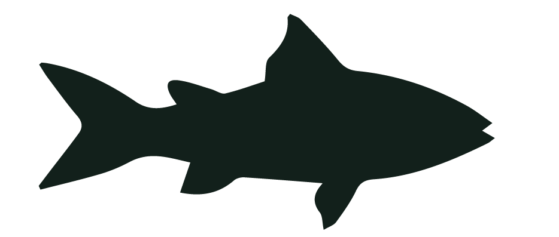

Client Website Redesign & Social Media Strategy I am currently managing a team to work with a local business to redesign their website and create a social media strategy to increase their online presence and attract more customers. There are two phases to this project, the first is market reserch, competetor analysis, user research, and creating a content calender. The second phase is the website redesign, which includes creating wireframes, mockups, and a prototype for the new website. We have completed the first phase and are currently working on the second phase. This project has been a great learning experience for me as I have been able to apply the skills I have learned in my classes to a real-world project and work with a team to create a solution for a client. Outcomes - Created a content calender for the client`s social media accounts to increase engagement and attract more customers. - Created wireframes, mockups, and a prototype for the new website to improve the user experience and increase conversions. - Client is currently implementing the new social media strategies, and we are seeing an increase in online engagement and customer traffic to the business, with a 3,233.33% increase in engagement from three months of use. Technologies Used Figma, Canva, Wix, Social Blade, Google Slides, OneDrive. Challenges & Solutions - One of the biggest challenges we faced was creating a content calender that would be effective for the client`s social media accounts. We overcame this challenge by conducting market research and competitor analysis to understand what type of content would be most effective for the client`s target audience. We also created a content calender that included a mix of promotional and engaging content to increase engagement and attract more customers. - Another challenge we faced was creating a website redesign that would improve the user experience and increase conversions. We overcame this challenge by conducting user research to understand the pain points of the current website and creating wireframes, mockups, and a prototype for the new website that addressed these pain points and improved the overall user experience.
Kitten Adoption Poster Design A client reached out to me to create a poster for their kittens to promote their adoption. The goal of this project was to create a poster that would be visually appealing and encourage people to adopt the kittens, preventing them from being sent to a shelter. I used Adobe Photoshop to create the poster, which included a combination of typography,imagery, and color to create a cohesive design. The poster was designed to be eye-catching, persuasive, and friendly to encourage people to adopt the kittens. Outcomes - Created a poster for kitten adoption that is visually appealing and encourages people to adopt the kittens. - Successfully promoted the adoption of the kittens, with all kittens being adopted within a month of the poster being shared around the community. Technologies Used Adobe Photoshop Challenges & Solutions - I struggled significantly with trying to find the right design and colors to use in the poster. I overcame this challenge by researching other adoption posters and using Adobe Photoshop to experiment with different design elements and color schemes until I found a combination that was visually appealing and effectively conveyed the message of the poster. I also used images of the kittens provided by the client to create a personal connection with potential adopters and make the poster more persuasive.
Dr. Pepper Social™ Media Audit The goal of this project was to conduct a social media audit for Dr. Pepper Social™ to evaluate their current social media presence and provide recommendations for improvement. I analyzed Dr. Pepper Social™'s social media accounts, including their content, engagement, and overall strategy. I also compared their social media presence to that of their competitors to identify areas where they could improve. Based on my analysis, I provided recommendations for improving Dr. Pepper Social™'s social media strategy, including suggestions for content creation, engagement tactics, and overall strategy. Please note that this project is a hypothetical social media audit and is not an official analysis of Dr. Pepper Social™'s social media presence. Outcomes - Conducted a comprehensive social media audit for Dr. Pepper Social™. - Provided actionable recommendations for improving their social media strategy. Technologies Used Social Blade, Google Slides Challenges & Solutions - One of the main challenges I faced while conducting the social media audit was analyzing the vast amount of data available on Dr. Pepper Social™'s social media accounts. I overcame this challenge by using tools such as Social Blade to analyze their social media metrics and identify trends and patterns in their content and engagement. I also compared their social media presence to that of their competitors to identify areas where they could improve and provided actionable recommendations for improving their social media strategy.
Email Address
ditzenberger.ivy@gmail.com
Handshake
https://iuindianapolis.joinhandshake.com/profiles/ivyditzenberger
GitHub
https://github.com/ToadM0de